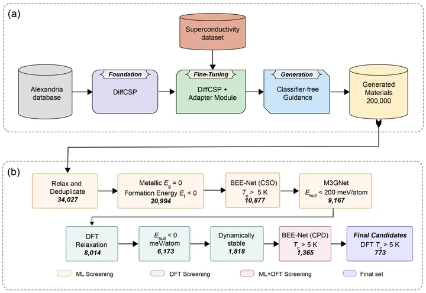

Guided diffusion for the discovery of new superconductors
npj Computational Materials 12, 286 (2026)Spotlight, NeurIPS 2025 AI4Mat
We fine-tune a crystal-structure foundation model with an adapter and classifier-free guidance so that it generates structures with a target superconducting Tc. Of 200,000 generated structures, 773 passed ML and DFT screening with Tc above 5 K.